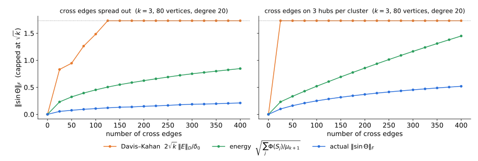
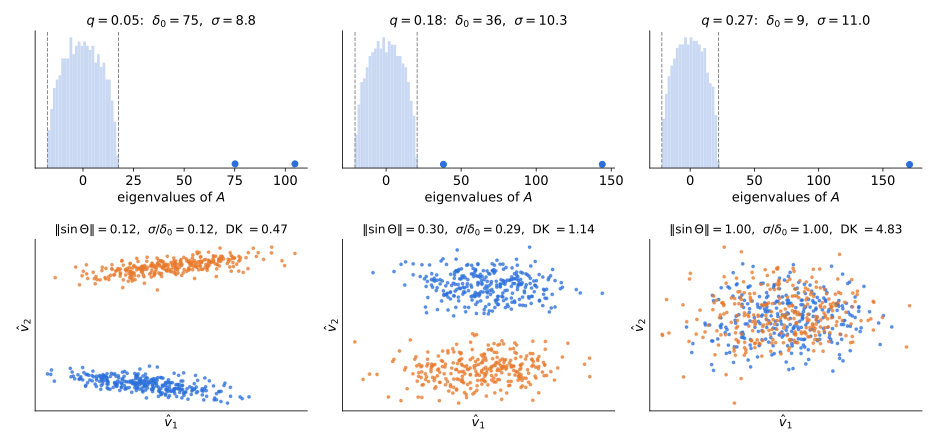

Planted clusters, the Davis–Kahan sin Θ theorem, and matrix concentration
Random walk \(P=D^{-1}A\), \(\ L_{rw}=I-P\), eigenvalues \(0=\mu_1\le\mu_2\le\dots\le\mu_n\le2\). \(P\) is self-adjoint in \(\ell^2(D)\): \(\ \langle f,g\rangle_D=\sum_ud_uf(u)g(u)\) (Lecture 2; Review I, §2.5).
All three are worst-case statements about what rounding an eigenvector can certify on any graph. In practice however, we are mostly interested in graphs that have an underlying cluster structure (e.g., unlike paths) that we hope to recover. Today we ask a recovery question, rather than an approximation one.
If the graph is a small perturbation of \(k\) planted clusters, does the spectral embedding recover them?
Algorithm (random-walk version, after Shi–Malik 2000).
Compute the top-\(k\) eigenvectors of \(P=D^{-1}A\), orthonormal in \(\ell^2(D)\):
\(\hat F=[\hat f_1,\dots,\hat f_k]\in\mathbb R^{n\times k},\qquad \hat F^\top D\hat F=I_k\).
Embed. Each eigenvector is a function on vertices. Map vertex \(u\) to \[\hat\varphi(u)=\big(\hat f_1(u),\dots,\hat f_k(u)\big)\in\mathbb R^k .\]
Cluster with \(k\)-means in \(\ell^2(D)\), i.e., with vertex weights \(d_u\): \[\min_{z,\,c}\ \sum_u d_u\,\big\|\hat\varphi(u)-c_{z(u)}\big\|^2 .\]
Plan: the ideal case · Davis–Kahan (full proof) · rounding · deterministic perturbations · stochastic perturbations · demo.
Let \(G_0\) be the disjoint union of connected graphs \(G_1,\dots,G_k\) on \(S_1,\dots,S_k\), with random walk \(P_0=D^{-1}A_0\). Then \(P_0\) is block diagonal.
Gap. \(\ \delta_0:=\lambda_k(P_0)-\lambda_{k+1}(P_0)=\min_j\mu_2(G_j)\ \ge\ \min_j\tfrac12\Phi(G_j)^2\), by Cheeger.
Observed walk \(\ P = P_0+E\), with \(E\) self-adjoint in \(\ell^2(D)\). Weyl (Review I, Cor. 2.9 and §2.5): eigenvalues move by at most \(\|E\|\). What about eigenvectors?
Toy model: \(A=\operatorname{diag}(1+\varepsilon,\,1,\,0)\). The top two eigenvalues are \(\varepsilon\) apart (like the \(k\)-fold eigenvalue \(1\) of \(P_0\)); the third is \(1\) below (like the gap \(\delta_0\)). Two perturbations, both of size \(\approx\varepsilon\):
| perturbation \(E\) | top eigenvector | top-2 eigenspace \(\operatorname{span}\{e_1,e_2\}\) | |
|---|---|---|---|
| (a) | \(\frac\varepsilon2\begin{pmatrix}-1&1&0\\1&1&0\\0&0&0\end{pmatrix}\), mixes \(e_1,e_2\) | \(e_1\to\frac{e_1+e_2}{\sqrt2}\): turns \(45^\circ\) | unchanged |
| (b) | \(\varepsilon\,(e_2e_3^\top+e_3e_2^\top)\), mixes \(e_2,e_3\) | unchanged | turns by \(\approx\varepsilon\) (\(\sin\Theta=0.0985\) at \(\varepsilon=0.1\)) |
Two lessons.
\(A=\operatorname{diag}(1+\varepsilon,1,0)\): eigenvalues \(1+\varepsilon,\ 1,\ 0\) with eigenvectors \(e_1,e_2,e_3\). Perturbed eigenpairs of \(\hat A=A+E\):
| \(\|E\|\) | \(\lambda_1(\hat A)\) | \(\lambda_2(\hat A)\) | \(\lambda_3(\hat A)\) | |
|---|---|---|---|---|
| (a) | \(\varepsilon/\sqrt2\) | \(1+\varepsilon\), \(\ \frac{e_1+e_2}{\sqrt2}\) | \(1\), \(\ \frac{e_1-e_2}{\sqrt2}\) | \(0\), \(\ e_3\) |
| (b) | \(\varepsilon\) | \(1+\varepsilon\), \(\ e_1\) | \(\frac{1+\sqrt{1+4\varepsilon^2}}2\approx1+\varepsilon^2\), \(\ \cos\theta\,e_2+\sin\theta\,e_3\) | \(\frac{1-\sqrt{1+4\varepsilon^2}}2\approx-\varepsilon^2\), \(\ -\sin\theta\,e_2+\cos\theta\,e_3\) |
In (b), \(\tan2\theta=2\varepsilon\): the \(2\times2\) block \(\left(\begin{smallmatrix}1&\varepsilon\\\varepsilon&0\end{smallmatrix}\right)\) on \(\operatorname{span}\{e_2,e_3\}\).
At \(\varepsilon=0.1\):
| eigenvalues of \(\hat A\) | top eigenvector moves by | top-2 eigenspace moves by (\(\sin\Theta\)) | |
|---|---|---|---|
| (a) | \(1.1,\ 1,\ 0\) (unchanged) | \(\sin=0.707\) (\(45^\circ\)) | \(0\) |
| (b) | \(1.1,\ 1.0099,\ -0.0099\) | \(0\) | \(0.0985\) |
\(V,\hat V\in\mathbb R^{n\times k}\) with orthonormal columns. Singular values of \(\hat V^\top V\): \(\cos\theta_1\ge\dots\ge\cos\theta_k\), the principal angles \(\theta_i\in[0,\pi/2]\). Set \(\sin\Theta=\operatorname{diag}(\sin\theta_i)\).
Lemma 2.1. Complete \(\hat V\) to an orthogonal \([\hat V\ \hat V_\perp]\).
\(I_k=V^\top V=(\hat V^\top V)^\top(\hat V^\top V)+(\hat V_\perp^\top V)^\top(\hat V_\perp^\top V)\), so the squared singular values of \(\hat V_\perp^\top V\) are \(1-\cos^2\theta_i\).
Exercise.
Write \(\hat V^\top V=U(\cos\Theta)W^\top\) (SVD) and take \(O=UW^\top\). Then \[\|\hat VO-V\|_F^2=2k-2\operatorname{tr}(O^\top\hat V^\top V)=2\textstyle\sum_i(1-\cos\theta_i)\le2\sum_i\sin^2\theta_i.\ \blacksquare\]
~5 min. (2) is only used to justify calling sin Θ a distance between subspaces; it can be skipped in class (the note has an alternative proof via a 2×2 block computation). (3) is the statement spectral clustering uses: the computed embedding equals the ideal one up to a rotation, plus a small Frobenius error. O is the solution of the orthogonal Procrustes problem. 2) Let \(\Pi=VV^\top\), \(\hat\Pi=\hat V\hat V^\top\). Frobenius: \(\|\Pi-\hat\Pi\|_F^2=\operatorname{tr}\Pi+\operatorname{tr}\hat\Pi-2\operatorname{tr}(\Pi\hat\Pi)=2k-2\|\hat V^\top V\|_F^2=2\sum_i\sin^2\theta_i\). Operator: write \(x=x_1+x_2\) with \(x_1=\hat\Pi x\), \(x_2=(I-\hat\Pi)x\). Then \((\Pi-\hat\Pi)x=\Pi x_2-(I-\Pi)x_1\), a sum of two orthogonal vectors, and by (1) (applied both ways) \(\|\Pi(I-\hat\Pi)\|=\|(I-\Pi)\hat\Pi\|=\sin\theta_1\). So \(\|(\Pi-\hat\Pi)x\|^2\le\sin^2\theta_1\,(\|x_2\|^2+\|x_1\|^2)\), with equality for the best \(x=x_2\).
Theorem 3.1 (Davis–Kahan 1970). \(A\) and \(\hat A=A+E\) symmetric.
Let \(\hat V\) span the orthogonal complement of \(\hat V_\perp\). Then \[\|\sin\Theta(V,\hat V)\|\le\frac{\|EV\|}{\delta}\le\frac{\|E\|}{\delta},\qquad \|\sin\Theta(V,\hat V)\|_F\le\frac{\|EV\|_F}{\delta}.\]
Lemma 3.2. \(\Lambda\in\mathbb R^{k\times k}\) and \(M\in\mathbb R^{m\times m}\) symmetric, \(\mathrm{spec}(\Lambda)\subseteq[a,b]\), \(\mathrm{spec}(M)\cap(a-\delta,b+\delta)=\emptyset\). Then for all \(X\in\mathbb R^{m\times k}\), in operator and Frobenius norm, \[\|MX-X\Lambda\|\ \ge\ \delta\,\|X\|.\]
Center. Let \(c=\frac{a+b}2\) and \(r=\frac{b-a}2\). Then \(\|\Lambda-cI\|\le r\), and every eigenvalue of \(M-cI\) has absolute value \(\ge r+\delta\), so \(\|(M-cI)^{-1}\|\le\frac1{r+\delta}\).
Solve. With \(Y=MX-X\Lambda=(M-cI)X-X(\Lambda-cI)\), \[X=(M-cI)^{-1}\big(Y+X(\Lambda-cI)\big)\ \Rightarrow\ \|X\|\le\frac{\|Y\|+r\|X\|}{r+\delta}\ \Rightarrow\ \delta\|X\|\le\|Y\|.\ \blacksquare\]
Let \(X=\hat V_\perp^\top V\in\mathbb R^{(n-k)\times k}\). By Lemma 2.1(1), \(\|X\|=\|\sin\Theta\|\) and \(\|X\|_F=\|\sin\Theta\|_F\).
Start from \(AV=V\Lambda_1\): \[\hat AV-V\Lambda_1=(A+E)V-V\Lambda_1=EV.\] Multiply on the left by \(\hat V_\perp^\top\), and use \(\hat V_\perp^\top\hat A=\hat\Lambda_2\hat V_\perp^\top\) (symmetry of \(\hat A\)): \[\boxed{\ \hat\Lambda_2X-X\Lambda_1=\hat V_\perp^\top EV\ }\qquad\text{(Sylvester equation)}\] Lemma 3.2 with \(M=\hat\Lambda_2\), \(\Lambda=\Lambda_1\): \[\delta\,\|\sin\Theta\|=\delta\|X\|\le\|\hat V_\perp^\top EV\|\le\|EV\|.\qquad\blacksquare\]
The eigengap enters only through Lemma 3.2: the map \(X\mapsto\hat\Lambda_2X-X\Lambda_1\) is invertible with inverse of norm \(\le1/\delta\).
In applications \(A\) is the ideal (population) matrix. We control its gap, not that of \(\hat A\).
Corollary 3.3. \(V\), \(\hat V\) span the top-\(k\) eigenspaces of \(A\) and \(\hat A=A+E\), and \(\delta_0=\lambda_k(A)-\lambda_{k+1}(A)>0\). Then \[\|\sin\Theta\|\le\frac{2\|E\|}{\delta_0},\qquad\|\sin\Theta\|_F\le\frac{2\sqrt k\,\|E\|}{\delta_0}.\]
If \(\|E\|\le\delta_0/2\): take \([a,b]=[\lambda_k(A),\lambda_1(A)]\). By Weyl, every discarded eigenvalue satisfies \(\lambda_j(\hat A)\le\lambda_{k+1}(A)+\|E\|=a-(\delta_0-\|E\|)\), so \(\delta=\delta_0-\|E\|\ge\delta_0/2\) works. If \(\|E\|>\delta_0/2\), the bound exceeds \(1\) and is trivial. Frobenius: \(\|\sin\Theta\|_F\le\sqrt k\|\sin\Theta\|\). \(\blacksquare\)
\(A=\operatorname{diag}(\delta,0)\), \(\ E=\varepsilon\begin{pmatrix}0&1\\1&0\end{pmatrix}\). The top eigenvector of \(\hat A\) is at angle \(\theta\) from \(e_1\), with \(\tan2\theta=2\varepsilon/\delta\): \[\sin\theta=\frac{\varepsilon}{\delta}-O\big((\varepsilon/\delta)^3\big).\]
| \(\varepsilon/\delta\) | \(\sin\theta\) | DK bound \(\|E\|/\delta_{\rm pert}\) |
|---|---|---|
| 0.01 | 0.0100 | 0.0100 |
| 0.1 | 0.0985 | 0.0990 |
| 0.3 | 0.267 | 0.277 |
\(\delta_{\rm pert}=\delta-\lambda_2(\hat A)\): the gap in Theorem 3.1. Computed in scripts/verify_bounds.py.
Variants (same Sylvester proof): \(\tan\Theta\) and \(\sin2\Theta\) theorems (Davis–Kahan); singular subspaces of rectangular matrices (Wedin), via the dilation \(\left(\begin{smallmatrix}0&M\\M^\top&0\end{smallmatrix}\right)\).
The proof used only self-adjointness and orthonormality, so it holds in any inner product. For ours:
\(U:f\mapsto D^{1/2}f\) is an isometry \(\ell^2(D)\to\ell^2\), and \(\ UPU^{-1}=D^{1/2}PD^{-1/2}=N\) is symmetric. Translate:
| \(\ell^2\) (symmetric \(N\)) | \(\ell^2(D)\) (walk \(P\)) |
|---|---|
| \(V^\top V=I\) | \(F^\top DF=I\) |
| angles: singular values of \(\hat V^\top V\) | singular values of \(\hat F^\top DF\) |
| \(\|E\|\) | \(\|E\|_D=\max_f\dfrac{|\langle f,Ef\rangle_D|}{\|f\|_D^2}\) (\(E\) self-adjoint) |
| \(\|\hat VO-V\|_F^2\) | \(\|\hat FO-F\|_{D,F}^2=\sum_ud_u\,\|O^\top\hat\varphi(u)-\varphi(u)\|^2\) |
Corollary 3.3 in \(\ell^2(D)\). \(F,\hat F\): top-\(k\) eigenvectors of \(P_0\) and \(P=P_0+E\), orthonormal in \(\ell^2(D)\); \(\delta_0=\lambda_k(P_0)-\lambda_{k+1}(P_0)\). Then \[\|\sin\Theta\|\le\frac{2\|E\|_D}{\delta_0},\qquad \exists\,O:\ \ \|\hat FO-F\|_{D,F}\le\frac{2\sqrt{2k}\,\|E\|_D}{\delta_0}.\]
Lemma (counting bad vertices). The ideal embedding is \(\varphi(u)=c_j\) on \(S_j\); let \(\Delta_j=\min_{l\neq j}\|c_j-c_l\|\). Write \(\hat\varphi_O(u)=O^\top\hat\varphi(u)\) for the embedding given by \(\hat FO\). Call \(u\in S_j\) bad if \(\|\hat\varphi_O(u)-c_j\|\ge\Delta_j/2\). Then
Triangle inequality, and Markov’s inequality on the \(d_u\)-weighted squared errors. \(\blacksquare\)
\(G\) with planted partition \(S_1,\dots,S_k\). Split \(A=A_{\rm in}+A_{\rm out}\); \(\ d_{\rm out}(u)\) = weight of \(u\)’s edges leaving its cluster.
Ideal graph \(G_0\): replace every cut edge \(\{u,v\}\) of weight \(w\) by a self-loop of weight \(w\) at \(u\) and at \(v\): \[A_0=A_{\rm in}+D_{\rm out}.\]
\(0\le f^\top L_{\rm out}f\le2f^\top D_{\rm out}f\), hence \(\ \|E\|_D\le2\varepsilon_{\rm out}\), where \(\ \varepsilon_{\rm out}:=\max_u\dfrac{d_{\rm out}(u)}{d(u)}\).
Theorem. Let \(\hat F\) be the top-\(k\) eigenvectors of \(P\) and \(F=[f_1,\dots,f_k]\) the cluster indicators (both orthonormal in \(\ell^2(D)\)). Then \[\|\sin\Theta(F,\hat F)\|\ \le\ \frac{4\,\varepsilon_{\rm out}}{\delta_0}\ \le\ \frac{8\,\varepsilon_{\rm out}}{\min_j\Phi(G_j)^2},\] where \(\Phi(G_j)\) is the conductance of \(G[S_j]\) with volumes measured in \(G\) (the loops count), and \(\ \sum_j\mathrm{vol}(\text{bad}\cap S_j)/\mathrm{vol}(S_j)\le8\|\sin\Theta\|_F^2\le128\,k\,\varepsilon_{\rm out}^2/\delta_0^2\).
Read it as: (fraction of each vertex’s edges leaving its cluster) ≪ (internal expansion)².
The weak point: \(\varepsilon_{\rm out}\) is a maximum over vertices. Put all cross edges on a few hubs. One vertex with half its edges crossing gives \(\varepsilon_{\rm out}=\tfrac12\), and the bound is vacuous, although \(\Phi(S_j)\) is tiny and the embedding is fine.
The same per-vertex degree ratio appeared in KLLOT Cor. 4.16 (Lecture 7): \(\frac{d_1+d_2}{d_1}\).
Proposition (cf. Peng–Sun–Zanetti 2015). \(\hat F\) = bottom-\(k\) eigenvectors of \(L_{rw}=I-P\) for the observed \(G\), orthonormal in \(\ell^2(D)\). Then \[\|\sin\Theta(F,\hat F)\|_F^2\ \le\ \frac{\sum_j\Phi(S_j)}{\mu_{k+1}(G)}.\]
\(\langle f_j,L_{rw}f_j\rangle_D=\dfrac{w(S_j,\bar S_j)}{\mathrm{vol}(S_j)}=\Phi(S_j)\) (Rayleigh quotient of an indicator). Expand \(f_j=\sum_i a_i\hat f_i\) in the \(\ell^2(D)\)-orthonormal eigenbasis of \(L_{rw}\): \[\Phi(S_j)=\sum_i\mu_ia_i^2\ \ge\ \mu_{k+1}\sum_{i>k}a_i^2=\mu_{k+1}\,\|\hat F_\perp^\top Df_j\|^2.\] Sum over \(j\) and use Lemma 2.1(1). \(\blacksquare\)

| Davis–Kahan | Energy bound | |
|---|---|---|
| perturbation size | \(\|E\|_D\le2\varepsilon_{\rm out}\) (worst vertex) | \(\sum_j\Phi(S_j)\) (average) |
| gap | ideal graph: \(\delta_0\) | observed graph: \(\mu_{k+1}(G)\) |
| rate | linear: \(\varepsilon/\delta_0\) | square root: \(\sqrt{\Phi/\mu_{k+1}}\) |
| good for | many, random cross edges (next) | few, adversarial cross edges |
\(n\) vertices in \(k\) blocks of size \(n/k\). Edges independent: probability \(p\) inside a block, \(q<p\) across.
With \(Z\in\{0,1\}^{n\times k}\) the block membership matrix, \[\mathbb EA=Z\big((p-q)I_k+qJ_k\big)Z^\top-pI.\]
Here a constant fraction of each vertex’s edges cross, so the cut is not sparse. The cross edges are random, and that is what will save us: \(E=A-\mathbb EA\) has norm \(\approx\sqrt d\), not \(d\).
Let \(d=\max_u\sum_v p_{uv}\) (max expected degree).
Matrix Bernstein (Tropp 2012). \(X_1,\dots,X_m\) independent, symmetric \(n\times n\), \(\ \mathbb EX_i=0\), \(\ \|X_i\|\le L\), and \(\ \sigma^2=\big\|\sum_i\mathbb EX_i^2\big\|\). Then \[\Pr\Big[\Big\|\sum_iX_i\Big\|\ge t\Big]\le2n\exp\Big(\frac{-t^2/2}{\sigma^2+Lt/3}\Big).\]
Apply: \(X_{uv}=(A_{uv}-p_{uv})(e_ue_v^\top+e_ve_u^\top)\) for \(u<v\). Then \(L=1\) and \(\sum\mathbb EX_{uv}^2=\operatorname{diag}\big(\sum_vp_{uv}(1-p_{uv})\big)\preceq d\,I\). With probability \(\ge1-2/n\), \[\|E\|\ \le\ 2\sqrt{d\ln n}+\tfrac43\ln n\ \le\ 4\sqrt{d\ln n}\quad(d\ge\ln n).\]
Same four steps as the scalar proof, with \(\operatorname{tr}\) and \(\exp\) of matrices. Let \(Y=\sum_iX_i\).
Why Lieb? The obvious route (Golden–Thompson, Ahlswede–Winter 2002) peels off one summand at a time and replaces \(\big\|\sum_i\mathbb EX_i^2\big\|\le d\) by \(\sum_i\|\mathbb EX_i^2\|\approx nd/2\). For the SBM that gives \(\|E\|\lesssim\sqrt{nd\log n}\): worse than the trivial bound \(\|E\|\le\) max degree.
The factor \(n\) in front comes from the trace (step 4): it is the dimension, and it is where the \(\log n\) comes from.
Theorem (Davis–Kahan + matrix Bernstein + counting). If \(d\ge\ln n\), then with probability \(\ge1-2/n\), spectral clustering on \(A\) misclassifies (by nearest true center) at most \[\frac{32k\,\|E\|^2}{\Delta^2\delta_0^2}=\frac{16\,n\,\|E\|^2}{\delta_0^2}\ \le\ \frac{256\,k^2\,p\ln n}{(p-q)^2}\quad\text{vertices.}\]
Chain: \(\ \#\text{bad}\le\frac{4}{\Delta^2}\|\hat VO-V\|_F^2\le\frac{8}{\Delta^2}\|\sin\Theta\|_F^2\le\frac{32k\|E\|^2}{\Delta^2\delta_0^2}\), with \(\Delta^2=\frac{2k}n\), \(\delta_0=\frac{n(p-q)}k\), \(\|E\|^2\le16\,np\ln n\).

\(n=600\), \(k=2\), \(p=0.3\). Dashed: \(\pm2\sigma\). Blue dots: outlier eigenvalues. Colors: true blocks.
Standalone: demos/spectral-clustering-demo.html (append #planted to open the second tab). Try: SBM, move q toward p and watch the outliers merge into the bulk; planted clusters, switch “spread out” to “on 3 hubs”.
Reading: the Davis–Kahan note, von Luxburg §7 (perturbation theory point of view), Yu–Wang–Samworth.